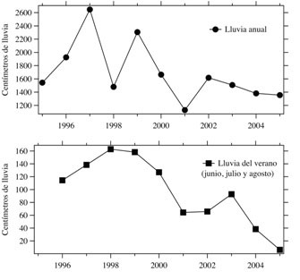

“No se puede lavar los utensilios de la panadería muy bien y es más difícil lavarse las manos”, contó Óscar Chauca, dueño de la tienda y panadería Víveres Alexander. Tanto el señor Chauca como la señora Males afirmaron que no había agua para bañarse ni lavar la ropa, y por eso bañaban con el agua del tanque o se iban al río. Y, según la doctora Daniela Guevara del hospital de Apuela, tres alumnos de la Escuela Francisco Javier Endara se enfermaron con hepatitis durante ese tiempo, cuando no había agua. La galena supone que fue por no lavarse las manos y por los baños sucios de la escuela.
El problema no se limita al centro poblado de Apuela. “No hay agua en las fuentes. No hay agua en la captación”, dijo Shisela Morales, presidenta de la Junta Parroquial de García Moreno. El sistema de agua de su parroquia sirve tanto a la cabecera parroquial como a la comunidad aledaña de El Rosal. Las sequías que solían ocurrir de vez en cuando ya están volviendo permanentes, relató la señora Morales. Mientras la población de la cabecera parroquial crece, el agua disminuye.
Ahora se tiene agua sólo unas horas, dijo el 6 de octubre. “A veces no tienes ni para cocinar”.
¿Un verano fuera de serie?
Según las personas entrevistadas de Apuela y García Moreno, la disminución de los caudales que alimentan los sistemas de agua ha sido más grave que en los veranos anteriores. En Apuela se conectó el sistema a una nueva vertiente y desde entonces la situación ha mejorado en algo. En García Moreno la vertiente en consideración está a cuatro kilómetros de la actual.
Pero existen puntos de vista distintos. “Este verano no es tan fuerte como otros,” opinó Armando Almeida, técnico de Defensa y Conservación Ecológica de Íntag (DECOIN). Los caudales de las vertientes bajan todos los veranos, dijo, pero por el verano tan corto, el problema no ha sido tan grave. Gloria Hidalgo, tesorera de la Junta Parroquial de Plaza Gutiérrez, afirmó que “siempre hemos tenido agua, y todavía la tenemos”. Y Luis Pareja, el presidente de la Junta de Agua de Peñahererra, dijo que su situación es casi normal. Sin embargo, dijo que los veranos han sido más fuertes. Hace unos tres años la parroquia conectó una segunda vertiente al sistema porque la que tenía ya no abastecía.
Por su parte, Fausto Vetancourt, presidente de la Junta de Agua de Pucará (Parroquia Apuela) dijo que los caudales de las quebradas han bajado en alrededor del 25 por ciento en los últimos seis años. Su comunidad está sin agua de vez en cuando todos los veranos, dijo, pero éste no ha sido el peor.
En Selva Alegre tienen agua las 24 horas, aseguró el presidente de la Junta Parroquial, Vladimir Santander. Pero el caudal de la vertiente en La Joya que abastece la parroquia ha bajado notablemente en los últimos ocho años. Están buscando una segunda vertiente ¿??????? de la que utilizan.
A largo plazo
Un buen número de las personas entrevistadas atribuye la escasez de agua a la poca lluvia. Para comprobar esta aseveración, analizamos los datos históricos al respecto.
Según los cifras del Instituto Nacional de Meteorología e Hidrología (INAMHI), en 1996 el pluvímetro ubicado en García Moreno registró 1924 centímetros de lluvia. En 2005, el último año del estudio, sólo registró 1350. La disminución es más fuerte aún en las medicines del verano: la lluvia total de los meses de junio, julio y agosto disminuyó de 114 centímetros en 1996 a apenas seis centímetros en 2005. Otro pluvímetro, en Pamplona, también registró una baja, pero menos fuerte. En cambio, los datos registrados por José DeCoux en el bosque protector Los Cedros (Manduriacos) desde 1992 demuestran mucha variación pero no existe una tendencia a la baja. La lluvia anual varía de 1914 centímetros en 2005 a 4125 centímetros en 2009. En el verano la variación es mayor: de 66 centímetros en 2005 a 616 en 2009.
Síntoma de problemas globales
La deforestación y el cambio climático son dos causas de la escasez de agua citadas por la gente entrevistada. “Es un problema a nivel mundial debido al mal manejo por el hombre a la naturaleza. No es sólo un problema de aquí”, opina el señor Chauca. Estudios científicos apoyan esta afirmación. Dos investigadores de la Universidad de Cuenca publicaron un artículo en 2009 sobre el impacto al convertir bosque en pastizal. Al finalizar el verano, las vertientes en el bosque tenían un caudal, mientras las de los pastizales se habían secado.
El efecto del cambio climático sobre las áreas de bosque nublado inteñas no es muy claro. Climatólogos internacionales pronostican un aumento en la temperatura de 3°C y un aumento en la precipitación del 10 por ciento en los Andes ecuatorianos en este siglo. Sin embargo, existe mucha incertidumbre al respecto.
Lo que es más, los caudales de los ríos, riachuelos y vertientes no dependen sólo de la lluvia. La cantidad de nieve en los nevados, la evaporación y la capacidad de la tierra de absorber el agua también juegan un papel importante pero no bien entendido.
Otras preocupaciones
Casi todos los entrevistados de las juntas de agua mencionaron que a veces la población está sin agua por fallas del sistema. También mencionan varias preocupaciones en cuanto a sus sistemas de almacenamiento, tratamiento y distribución.
Según Luis Pareja, el tanque de reserva de Peñaherrera es demasiado pequeño. Con frecuencia se llena, produciendo el desperdicio del agua. La junta ha pedido al Municipio fondos para uno más grande. El señor Vetancourt, de Pucará, también se refirió a la necesidad de uno más grande y de filtros y tanques desarenadores. Y el señor Sevillano, de Apuela, notó que un inspector de sanidad encontró bacterias de heces de ganado en el agua de esta parroquia, un problema que se resolvería con cloro. También se quejó del hecho de que la Junta de Agua carece de oficina propia.
Todos acordaron sobre la necesidad de más fondos de los usuarios, las autoridades gubernamentales y las ONG que trabajan en la zona para mejorar los sistemas y satisfacer los requerimientos de la población.
Fuentes: Butayert, W., Vuille, M., Dewulf, A., Urrutia, R., Karmalkar, A., y Celleri, R. 2010. Uncertainties in climate change projections and regional downscaling in the tropical Andes: Implications for water resources Management. Hydrology and Earth System Sciences 14: 1247-1258. Celleri, R. y Feyen, J. 2009. The hydrology of tropical Andean ecosystems: Importance, knowledge status and perspectives. Mountain Research and Development 29(4): 350-355.